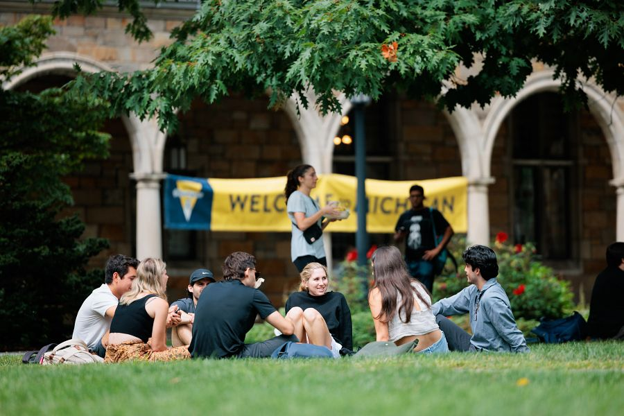

Critical Incident Support & Conflict Management

Everyone deserves to be in an environment where they feel safe and respected. When a conflict or critical incident impacts your education and wellbeing, it shouldn’t go unresolved. Turn to these resources for help finding support.
More Resources
Finance

Students may find it difficult to make ends meet, especially with the demands of classes, papers and exams. But you don’t have to do it alone. If you’re facing financial issues or concerns, these resources are available to assist.
More Resources
Food

Students should go to class hungry for knowledge, not for food. If you can’t afford balanced meals or sacrifice food to pay for bills, know that you don’t have to choose. Turn to these resources for help.
More Resources
Health Care

An important part of being away at college is remembering to take care of yourself. From scheduling an annual checkup to seeking emergency care, you have options for making your health a priority.
More Resources
Dean of Students Office
The Dean of Students Office assists U-M students with a variety of immediate and long-term needs, including: emergency funding, off-campus housing disputes, critical incident emergencies, physical illness/injuries, and food insecurity.
Visit the Dean of Students Office website